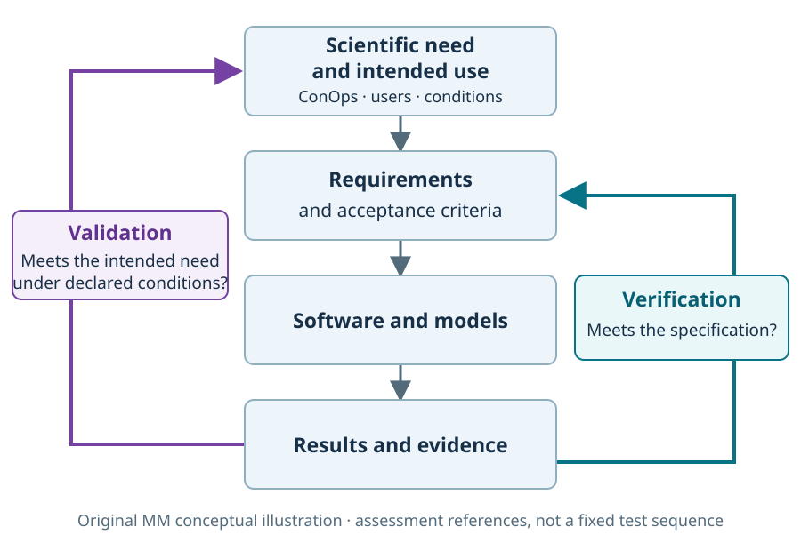

Learning & application · 1 of 3
Verification and validation
A result needs two references: the requirements it must satisfy, and the purpose it must serve.
Verification asks whether the implementation meets its specified requirements. Validation asks whether the product serves its intended purpose for the intended users and operating conditions. A correctly implemented requirement can still represent an inadequate answer to the user's need.

Keep the two references explicit
| Assessment | Reference | What the evidence should address |
|---|---|---|
| Verification | Identified requirements, interfaces and acceptance criteria | Whether the delivered implementation meets those obligations, including boundary and failure behavior |
| Validation | Scientific need and intended use; concept of operations (ConOps), users and operating conditions | Whether the requirements and solution are adequate for the decision they are intended to support, with their assumptions and limits |
NASA's Systems Engineering Handbook makes this distinction between conformity to requirements and suitability for the intended purpose and environment. Its discussion includes ConOps and typical users. The feedback arrows here identify the assessment references; they do not imply that validation should wait until coding is finished. Needs, requirements and designs can be examined earlier and revisited when evidence changes. [NASA-SE]
Declare the concept of operations
A useful ConOps says who will use the output, which decision it supports, under what conditions it is used, what inputs and interactions are expected, and what falls outside its scope. For scientific software, the assumptions linking an output to a scientific inference also need explicit justification.
- User and decision: who acts on the result, and what action or conclusion is contemplated?
- Conditions: which temporal, spatial, numerical and operating conditions matter?
- Assumptions: which simplifications are accepted for this use, and by whom?
- Limits: what result, missing evidence or out-of-domain case prevents a conclusion?
The worked example makes these questions concrete. A routine can calculate a correct total while failing to identify a deficit in a particular period. Its verification outcome depends on the specification being assessed; its adequacy depends on the declared use.
Evidence supports a bounded decision
For each assessment, identify the reference, applicable domain, criteria fixed before evaluation, observed evidence and responsible decision. A reproducible output establishes reproducibility under stated conditions. It does not alone establish the scientific relevance of that output.
If the requirements miss a material need, revise them prospectively, examine the consequences for contracts and tests, and reassess the affected work. If the evidence is incomplete, retain the unresolved issue rather than expanding a passing result beyond what was examined.
Follow one synthetic need through two specifications, a data contract, implementation, tests and an accept/reject decision.
Open the worked exampleSources and scope
- NASA-SE. Systems Engineering Handbook, §2.4: Distinctions between Product Verification and Product Validation. Source for the two assessment references and their application throughout development. Accessed 19 November 2026.
- NASA-IVV. NASA IV&V Overview. Complementary background for the two assurance questions. Accessed 19 November 2026.
The diagram and explanation were prepared for MM. They are not an official NASA figure, a NASA review of MM, or a claim of certification or compliance. The existing certified MM authorities continue to control.